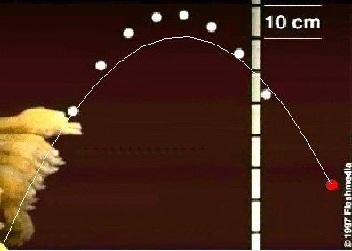

In this simulation, we superimpose the motion of a ball computed by solving the equations of motion with a video of an actual such motion.
The user must adjust the initial conditions and the parameters so that both motions, the computed and the one displayed by the video, match closely.
